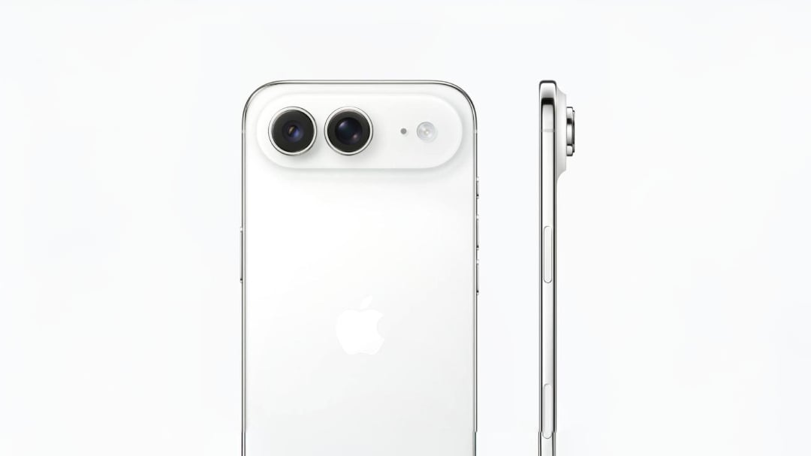

배터리 용량 확대
작은 배터리 용량은 단연 초기 모델의 가장 큰 단점이었습니다. Apple은 셀 용량을 3,149mAh에서 약 3,500mAh로 늘려 이 문제를 해결할 계획입니다.
- 기존 대비 약 11%의 전력 향상
- 매우 슬림한 기기 디자인을 유지하면서도 일상적인 사용 시간을 대폭 개선
듀얼 렌즈 후면 카메라 시스템
초기 모델은 단일 48메가픽셀 Wide 렌즈만을 제공하여 모바일 사진 촬영에 제약을 주었습니다. 더 나은 촬영 유연성을 제공하기 위해, 새로운 버전은 듀얼 렌즈 배열을 채택할 예정입니다.
- 고해상도 메인 센서와 ultra-wide 렌즈의 조합
- 사용자에게 더욱 넓은 창의적 촬영 자유도 제공
차세대 2nm A20 칩셋
기기의 핵심 성능 또한 세대적인 도약을 이룰 예정입니다. 기존 A19 Pro 아키텍처에서 벗어나, 초효율적인 2nm 공정으로 제조되는 Apple의 차세대 A20 칩을 탑재하게 됩니다.
- 고급 설계로 인한 전력 소모 감소 및 발열 문제 억제
- 기기의 작동 시간 대폭 연장
더 얇은 디스플레이 패키징
이러한 하드웨어 추가 사항을 초슬림 스마트폰에 담아내기 위해서는 영리한 공간 최적화가 필요합니다. 보고에 따르면 Apple은 Samsung의 CoE(Color Filter on Encapsulation) OLED 기술을 도입하고 있습니다.
- 컬러 필터를 봉지 필름에 직접 인쇄하여 전체 화면 어셈블리의 두께를 대폭 감소
- 더 커진 배터리를 수용할 수 있는 내부 공간 확보
출시 일정
기존의 병목 현상들을 해결함으로써, Apple은 유틸리티를 타협하지 않으면서도 얇은 스마트폰을 제공할 준비를 마쳤습니다. 이 기기는 2027년 봄에 표준 iPhone 18과 함께 공식 출시될 예정입니다.
총평
차세대 iPhone Air는 배터리 용량 확대, 듀얼 카메라 시스템 도입, 그리고 2nm 공정 기반의 A20 칩셋 탑재를 통해 기존 모델의 한계를 극복할 것으로 보입니다. 특히 Samsung의 CoE 기술을 활용한 디스플레이 최적화는 초슬림 디자인과 성능 사이의 균형을 맞추는 핵심 요소가 될 전망입니다.
Expanded Battery Capacity
Small battery capacity was undoubtedly the biggest drawback of the initial models. Apple plans to address this issue by increasing the cell capacity from 3,149mAh to approximately 3,500mAh.
- Approximately an 11% increase in power compared to previous models
- Significantly improved daily usage time while maintaining a very slim device design
Dual Lens Rear Camera System
The initial model provided only a single 48-megapixel Wide lens, which limited mobile photography options. To provide better shooting flexibility, the new version will adopt a dual-lens array.
- A combination of a high-resolution main sensor and an ultra-wide lens
- Provides users with greater creative freedom in photography
Next-Generation 2nm A20 Chipset
The device's core performance is also expected to make a generational leap. Moving away from the existing A19 Pro architecture, it will feature Apple's next-generation A20 chip manufactured on an ultra-efficient 2nm process.
- Reduced power consumption and suppressed heat issues due to advanced design
- Significantly extended operating time for the device
Thinner Display Packaging
To fit these hardware additions into an ultra-slim smartphone, clever space optimization is required. Reports indicate that Apple is adopting Samsung's CoE (Color Filter on Encapsulation) OLED technology.
- Significantly reduces the thickness of the overall screen assembly by printing color filters directly onto the encapsulation film
- Secures internal space to accommodate a larger battery
Release Schedule
By resolving these bottlenecks, Apple is prepared to offer a thin smartphone without compromising on utility. This device is scheduled for an official release in the spring of 2027 alongside the standard iPhone 18.
Summary
The next-generation iPhone Air aims to overcome previous limitations through expanded battery capacity, a dual camera system, and a 2nm-process A20 chip. Specifically, the integration of Samsung's CoE technology is expected to be a key factor in balancing an ultra-slim design with high performance.
バッテリー容量の拡大
小さなバッテリー容量は、初期モデルにおける最大の弱点でした。Appleはセル容量を3,149mAhから約3,500mAhに増やすことでこの問題を解決する計画です。
- 従来比で約11%の電力向上
- 非常にスリムなデバイスデザインを維持しながら、日常的な使用時間を大幅に改善
デュアルレンズ背面カメラシステム
初期モデルは単一の48メガピクセルWideレンズのみを提供しており、モバイルでの撮影に制約がありました。より優れた撮影の柔軟性を提供するため、新バージョンではデュアルレンズ構成を採用する予定です。
- 高解像度メインセンサーとultra-wideレンズの組み合わせ
- ユーザーにより広い創造的な撮影の自由度を提供
次世代2nm A20チップセット
デバイスの核心となる性能も、世代的な飛躍を遂げる予定です。従来のA19 Proアーキテクチャから脱却し、超効率的な2nmプロセスで製造されるAppleの次世代A20チップを搭載します。
- 高度な設計による消費電力の低減および発熱問題の抑制
- デバイスの稼働時間の大幅な延長
より薄型なディスプレイパッケージング
これらのハードウェア追加要素を超スリムなスマートフォンに収めるためには、巧みなスペースの最適化が必要です。報道によると、AppleはSamsungのCoE（Color Filter on Encapsulation）OLED技術を採用しています。
- カラーフィルターを封止フィルムに直接印刷することで、ディスプレイアセンブリ全体の厚みを大幅に削減
- より大型のバッテリーを収容できる内部スペースの確保
リリーススケジュール
既存のボトルネックを解消することで、Appleは利便性を妥協することなく、薄型のスマートフォンを提供する準備を整えました。このデバイスは2027年春に標準のiPhone 18と共に正式に発売される予定です。
まとめ
次世代iPhone Airは、バッテリー容量の拡大、デュアルカメラシステムの導入、そして2nmプロセスに基づくA20チップセットの搭載により、従来モデルの限界を克服する見込みです。特にSamsungのCoE技術を活用したディスプレイの最適化は、超スリムなデザインと性能のバランスを両立させるための鍵となります。
Expanded Battery Capacity
Small battery capacity was a significant drawback of the initial models. Apple plans to address this issue by increasing the cell capacity from 3,149mAh to approximately 3,500mAh.
- Approximately an 11% increase in power compared to previous models
- Significantly improved daily usage time while maintaining a very slim device design
Dual Lens Rear Camera System
The initial model provided only a single 48-megapixel Wide lens, which limited mobile photography options. To provide better shooting flexibility, the new version will adopt a dual-lens array.
- A combination of a high-resolution main sensor and an ultra-wide lens
- Provides users with greater creative freedom in photography
Next-Generation 2nm A20 Chipset
The device's core performance is also expected to make a generational leap. Moving away from the existing A19 Pro architecture, it will feature Apple's next-generation A20 chip manufactured on a highly efficient 2nm process.
- Reduced power consumption and suppressed heating issues due to advanced design
- Significantly extended operating time for the device
Thinner Display Packaging
Sophisticated space optimization is required to fit these hardware additions into an ultra-slim smartphone. Reports indicate that Apple is adopting Samsung's CoE (Color Filter on Encapsulation) OLED technology.
- Significantly reduces the thickness of the overall display assembly by printing color filters directly onto the encapsulation film
- Secures internal space to accommodate a larger battery
Release Schedule
By resolving these bottlenecks, Apple is prepared to offer a thin smartphone without compromising on utility. This device is scheduled for official release in the spring of 2027 alongside the standard iPhone 18.
Summary
The upcoming iPhone Air aims to overcome previous limitations by incorporating an expanded battery, a dual-lens camera system, and a high-performance A20 chip on a 2nm process. By utilizing Samsung's CoE technology, Apple intends to balance a slim aesthetic with enhanced performance for its 2027 release.
